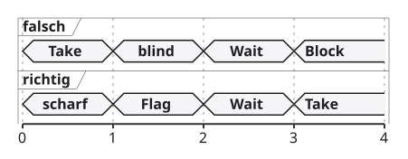
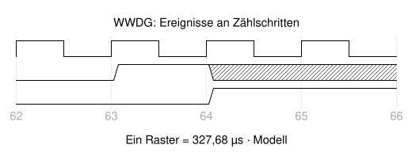

08 · Konkurrenz und Fehler beherrschen
Multicore-Synchronisation und Safety auf dem STM32H755
Besitz, Fortschritt und Speicherrechte unterscheiden
HSEM, Watchdogs und MPU verständlich einsetzen
Rechnen auf Papier und zwei getrennte Hardwareversuche
Dieser Termin ergänzt den Datenaustausch und die Zeitmessung der vorherigen Vorlesungen um drei Schutzfragen. Wer darf eine gemeinsame Ressource verändern? Woran erkennen wir ausbleibenden Fortschritt? Welche Speicheradresse darf ein Kern benutzen? HSEM bedeutet Hardware Semaphore, ein im Chip verwaltetes Schloss. Ein Watchdog ist ein Wächter mit ablaufendem Zähler. MPU bedeutet Memory Protection Unit, die Speicherschutzeinheit eines Kerns.
Die Plattform bleibt das NUCLEO-H755ZI-Q mit dem STM32H755: Cortex-M7 ohne Echtzeitkernel und Cortex-M4 mit FreeRTOS, dem bisher verwendeten Echtzeitbetriebssystem. Safety bezeichnet den Schutz vor unvertretbaren Folgen einer Fehlfunktion. Die Übung führt Mechanismen vor und begründet ihre Grenzen. Ein funktionierender Lehrversuch allein ist keine Freigabe für eine sicherheitskritische Anlage. Zuerst betrachten wir einen überschaubaren gemeinsamen Zähler; anschließend folgen Fortschrittsfristen und Speicherrechte.
Was Sie aus Vorlesungen 1–7 mitbringen
Deadline und Antwortzeit
Wie schnell wird ein Fehler beherrscht?
Task, Mutex, Interrupt
Wer schützt gegen den zweiten Kern?
Shared Memory und Cache
Reicht ein Schloss für Sichtbarkeit?
Messvertrag und Trace
Was belegt der Fehlerexperiment-Lauf?
Eine Deadline ist die geforderte Abschlussfrist einer konkreten Aktivierung, die Antwortzeit der Abstand von ihrer Freigabe bis zum Abschluss. Eine Task ist ein vom Echtzeitkernel verwalteter Ausführungspfad. Ein Mutex ist eine Sperre mit Besitzer innerhalb des verwendeten Kernels. Ein Interrupt unterbricht den normalen Ablauf für einen Handler. Shared Memory ist gemeinsam erreichbarer Speicher; ein Cache hält lokale Kopien. Ein Trace ist eine geordnete Ereignisaufzeichnung. Der Messvertrag benennt Anfang, Ende, Zeitquelle und Bedingungen einer Messung.
Diese Begriffe genügen als Einstieg. Das Zustandsprotokoll aus Vorlesung 6 gibt immer einem Teilnehmer Schreibrecht. Heute ändern wir die Anforderung: Beide Kerne wollen denselben Zähler unabhängig erhöhen. Eine einzelne Variable ersetzt das alte Protokoll nicht. Auch die Zeitmessung aus Vorlesung 7 bleibt nützlich: Ein beobachteter Reset zeigt eine Reaktion, aber noch keine maximale Reaktionszeit für alle möglichen Fehler. Wir führen die neuen Mechanismen daher jeweils mit Voraussetzung, Beispiel und Aussagegrenze ein.
Fünf überprüfbare Lernziele
Ein verlorenes Inkrement Schritt für Schritt erklären
HSEM-Besitz und Datensichtbarkeit gemeinsam begründen
Eine Freigabe ohne verlorenes Aufwecken erwarten
Watchdog-Fenster und Reaktionsbudgets berechnen
MPU-Schutz von einer sicheren Fehlerreaktion unterscheiden
Ein verlorenes Inkrement, auch Lost Update genannt, entsteht durch überlappende Lese-Änderungs-Schreibfolgen. Die Erklärung muss deshalb die privaten Registerkopien und den gemeinsamen Speicher getrennt verfolgen. HSEM, Hardware Semaphore, entscheidet den Besitz einer Ressource, aber macht keine Cachekopien aktuell. Datensichtbarkeit benötigt zusätzlich den Vertrag aus Vorlesung 6.
Verlorenes Aufwecken bezeichnet eine Freigabe, die vor dem Warten stattfindet und nicht gespeichert wird. Ein speicherndes Ereignis löst dieses Problem, überträgt jedoch keinen Besitz. Ein Watchdog-Fenster begrenzt den erlaubten Zeitpunkt des Nachladens nach unten und oben. Das Reaktionsbudget addiert die tatsächlich nacheinander liegenden Verzögerungen bis zur geforderten Reaktion. Die MPU, Memory Protection Unit, prüft Adressregionen eines Kerns. Sie versteht weder die Länge eines C-Arrays noch die Sicherheit einer angeschlossenen Maschine. Diese Unterscheidungen werden in Papieraufgaben, dem Labor und dem abschließenden Quiz überprüft.
Vier Schulstunden sinnvoll aufteilen
Konkurrenz, Besitz und Warten · Folien 1–23
45
Fortschritt, Watchdogs und Schutz · Folien 24–50
45
Vier Papieraufgaben mit Auswertung
50
Vorbereiteter STM32-Versuch
25
Quiz und gemeinsame Klärung
15
Gesamt
180
Vier Schulstunden zu je 45 Minuten ergeben 180 Minuten. Der Plan enthält die Erklärzeit, die Übungen und das Quiz; zusätzliche Einrichtungszeit für eine neue Entwicklungsumgebung ist darin nicht enthalten. STM32 bezeichnet die hier verwendete Mikrocontrollerfamilie. Der Programmierteil setzt ein vorbereitetes, gemeinsam startendes Dual-Core-Projekt voraus. Dual Core heißt zwei Prozessorkerne auf dem Chip.
Die ersten 45 Minuten enden mit einer kurzen Transferfrage zum Zähler. Die zweiten 45 Minuten führen vom Fortschrittsnachweis zu den zeitlichen und räumlichen Grenzen des Schutzes. In den 50 Übungsminuten rechnen Sie vier Aufgaben auf Papier und vergleichen Ihre Begründungen. Der Hardwareteil nutzt vorrangig den HSEM-Zähler; HSEM ist das Hardware-Schloss. Eine vorbereitete Watchdog-Station kann zusätzlich das Fenster zeigen. Bei fehlender Hardware bleibt die vollständige Pflichtübung auf Papier lösbar. Das Quiz dient anschließend dazu, die häufigen Verwechslungen anhand konkreter Fälle zu klären.
Ein Beispiel, drei verschiedene Schutzfragen
Zwei Kerne erhöhen einen gemeinsamen Zähler.
Wer darf jetzt ändern?
Besitzprotokoll und HSEM
Wird notwendige Arbeit abgeschlossen?
Fortschrittsfristen und Watchdog
Ist dieser Kernzugriff erlaubt?
MPU-Regionen
Ein richtiges Ergebnis braucht zusätzlich eine fachliche Prüfung.
Wir verwenden einen gemeinsamen Zähler als durchgängiges Beispiel. Jeder Kern soll eine endliche Zahl von Erhöhungen ausführen. HSEM, Hardware Semaphore, kann die Änderung serialisieren, also die beiden kritischen Abschnitte nacheinander zulassen. Ein Watchdog kann einen ausbleibenden Refresh, das Nachladen seines Zählers, erkennen. Die Software muss den Refresh an den Abschluss der erforderlichen Arbeit binden. MPU, Memory Protection Unit, verhindert Zugriffe dieses Kerns auf ausdrücklich verbotene Regionen.
Diese Mechanismen ergänzen sich, beantworten aber verschiedene Fragen. Ein korrekt verriegelter Abschnitt kann endlos laufen. Ein rechtzeitig abgeschlossener Abschnitt kann den falschen Wert berechnen. Ein Überlauf innerhalb einer erlaubten Speicherregion kann von der Speicherschutzeinheit unbemerkt bleiben. Umgekehrt würde ein Watchdog nicht melden, dass eine falsche Rechnung pünktlich beendet wurde. Wir beginnen mit der ersten Frage, weil der Fortschrittsnachweis auf einer sauber definierten Arbeit aufbauen muss.
Warum zwei Inkremente nur eines ergeben
Startwert 5 · Erwartung nach zwei Inkrementen: 7.
M7 liest
5
—
5
M4 liest
5
5
5
beide addieren privat
6
6
5
M7 schreibt
6
6
6
M4 schreibt
6
6
6
Logische Reihenfolge, kein gemessener Zeitverlauf.
Das Inkrement in der Programmiersprache C besteht hier aus Lesen, Addieren und Schreiben. M7 und M4 bezeichnen den Cortex-M7 und Cortex-M4. Ihre Register sind privat; der gemeinsame Speicher ist eine andere Stelle. Beide lesen den alten Wert fünf. Beide bilden privat sechs. Der zweite Schreibvorgang überschreibt sechs durch sechs. Daher enthält der Speicher am Ende sechs, obwohl zwei Inkremente ausgeführt wurden. Das fehlende Inkrement heißt Lost Update, verlorene Aktualisierung. Der Gedankenstrich bedeutet, dass der M4 noch nicht gelesen hat.
Die Tabelle zeigt eine mögliche logische Reihenfolge, keine Messung und keine gemeinsame Taktflanke. Eine andere Reihenfolge kann zufällig sieben ergeben. Dieser günstige Lauf beweist keine Freiheit von Konkurrenzfehlern. Auch ein ausgerichtetes 32-Bit-Wort löst das Problem nicht: Ein einzelner Lesezugriff kann ungeteilt sein, während die ganze Lese-Änderungs-Schreibfolge weiter unterbrechbar bleibt. Ebenso hindert volatile den Compiler an bestimmten Optimierungen, schützt aber keine Folge gegen den zweiten Kern.
Der ganze Abschnitt gehört unter das Schloss
alten Wert außerhalb lesen
Schloss nehmen
Schloss nehmen
aktuellen Wert lesen
alte Kopie erhöhen und schreiben
erhöhen und schreiben
freigeben
freigeben
Mit Schutz: erster Besitzer schreibt 6, zweiter liest 6 und schreibt 7.
Ein kritischer Abschnitt ist die Folge, während der eine gemeinsame Invariante erhalten werden muss. Eine Invariante ist eine Eigenschaft, die zwischen den erlaubten Änderungen immer gelten soll. Hier lautet sie: Jede erfolgreich geschützte Änderung erhöht den gemeinsamen Zähler genau einmal. Zum kritischen Abschnitt gehören deshalb das Lesen, das Rechnen und das Schreiben.
Wer fünf außerhalb des Schlosses liest, kann später mit gültigem Besitz trotzdem einen veralteten Wert schreiben. Das Schloss ist dann nur um den letzten Zugriff gelegt und schützt die falsche Grenze. Der richtige Ablauf beginnt mit dem Erwerb. Erst danach wird der aktuelle Speicherwert geladen. Der erste Besitzer schreibt sechs und gibt frei. Der zweite erwirbt anschließend und liest sechs statt seiner alten Kopie. Sein Schreibwert ist sieben. Die Ordnung der Zugriffe und ihre Sichtbarkeit müssen beide gelten. Bevor wir diese Sichtbarkeit ergänzen, klären wir, warum bekannte lokale Sperren gegen einen zweiten Kern nicht automatisch helfen.
Lokaler Mutex und lokale Interruptsperre
FreeRTOS-Mutex auf M4
Teilnehmer dieses Kernels
__disable_irq() auf M4maskierbare Interrupts dieses Kerns
HSEM
kooperierende Benutzer auf beiden Kernen
Ein lokaler Mutex bleibt nötig, wenn mehrere lokale Tasks dieselbe HSEM-Kennung nutzen.
Ein FreeRTOS-Mutex ist eine Sperre des Echtzeitkernels auf dem Cortex-M4. Der Cortex-M7 ohne Kernel nimmt an diesem Mutexprotokoll nicht teil und kann weiter schreiben. Der Aufruf __disable_irq ist eine intrinsische Funktion zum lokalen Maskieren von Interrupts. Er hält den anderen Kern nicht an. HSEM bedeutet Hardware Semaphore und bietet auf dem STM32H755 einen gemeinsamen Hardwareentscheid über eine Ressourcenkennung.
HSEM ersetzt dennoch nicht jede lokale Sperre. Die Hardware kennt eine Kernkennung und eine softwaregewählte Prozesskennung. Benutzen zwei Tasks desselben Kerns dasselbe Paar, kann sie beide nicht als unterschiedliche Besitzer unterscheiden. In diesem Fall serialisiert ein lokaler Mutex zuerst diese Tasks; anschließend wird die gemeinsame Hardwaresperre erworben. Eine Interruptroutine, kurz ISR für Interrupt Service Routine, darf keinen blockierenden Mutexaufruf verwenden. Der Pflichtversuch verwendet daher genau einen Worker, einen arbeitenden Ausführungspfad, pro Kern und keinen Zugriff auf sein Schloss aus einer Interruptroutine.
Was das HSEM tatsächlich speichert
32 Ressourcen · Nummern 0 bis 31 · keine Task-Warteschlange.
%%{init: {'theme':'base','htmlLabels':false,'flowchart':{'htmlLabels':false},'themeVariables':{'background':'#FFFFFF','primaryColor':'#FFFFFF','primaryBorderColor':'#E5E5EA','primaryTextColor':'#1D1D1F','lineColor':'#86868B'}}}%%
stateDiagram-v2
direction LR
Frei --> Belegt: erfolgreicher Take
Belegt --> Frei: Release durch Besitzer
Belegt: Core-ID + ProcessID
HSEM heißt Hardware Semaphore. Auf dem STM32H755 gibt es 32 einzeln adressierte Ressourcen. Die Nummer wählt das Schloss, nicht den geschützten Speicher. Der Zugriff auf die Nutzdaten folgt erst im Programm. Das Diagramm ist ein Zustandsautomat, kein Schedulingverlauf: Von links nach rechts führt ein erfolgreicher Take, der Erwerb, vom freien in den belegten Zustand. Ein Release, die Freigabe durch den passenden Besitzer, führt zurück. Der belegte Zustand enthält die Core-ID, also die hardwareseitige Kernkennung, und die ProcessID, eine softwaregewählte Kennung.
Ein fehlgeschlagener Take verändert den fremden Besitz nicht und erscheint deshalb nicht als Zustandswechsel. Die Hardwareentscheidung verhindert zwei unterschiedliche Besitzer zur selben Zeit. Es gibt keine Task-Warteschlange, keine Zusage einer fairen Reihenfolge und keine Priority Inheritance, also automatische Prioritätsanhebung eines Besitzers wegen eines dringenderen Wartenden. Die zwei Schritte einer Treiberfunktion sind außerdem nicht mit einer einzigen Busoperation gleichzusetzen. Die drei Kennungen des Aufrufs müssen deshalb sorgfältig getrennt werden.
Drei Kennungen, eine Maske
HSEM-ID
1, vorher als frei reservieren
Ressource
ProcessID M7 / M4
0x37 / 0x34gewählte Nutzerkennung
Core-ID
hardwareseitig
zugreifender Kern
Notification-Maske für ID 1
1u << 1 = 0x2Bit für diese Ressource
Boot-Schloss und Nutzdaten-Schloss getrennt halten.
HSEM, Hardware Semaphore, verwendet die HSEM-ID als Ressourcenindex. ID bedeutet Identifier, Kennung. Für den Lehrversuch reservieren wir die Nummer eins, sofern das vorbereitete Projekt sie noch nicht verwendet. Das Boot-Schloss aus dem Startprotokoll bleibt separat, häufig Nummer null. ProcessID ist eine Softwarekennung von null bis 255. Die Lehrwerte 0x37 und 0x34 sind hexadezimal 55 und 52; sie sind weder die Core-ID noch ein Task-Handle, die Referenz auf eine Task.
M7 und M4 bezeichnen die zwei Cortex-Kerne. Die Hardware ordnet einen Zugriff seiner Core-ID zu. Eine Notification ist eine Meldung über eine Freigabe. Ihre Maske ist ein Bitfeld: Für Ressourcenindex eins muss Bit eins gesetzt sein, also eins um eine Position nach links verschoben, Wert zwei. Die Zahl eins als Maske würde Ressourcenindex null adressieren. Auch die späteren Freigabeaufrufe müssen dieselbe Ressourcen- und Prozesskennung wie der Erwerb tragen. Diese Zuordnung ist Teil des Programms und keine automatisch aus dem Tasknamen abgeleitete Eigenschaft.
Der geschützte Zugriff in C
Aus dem vollständigen Zählermodul · M7-Kennung 0x37.
if ( HAL_HSEM_Take( LAB08_HSEM_ID, 0x37 u ) == HAL_OK) { (); . count += 1 u ; (); ( LAB08_HSEM_ID, 0x37 u ); ++ hits; } else { ++ misses; } Warten, Ausgabe und Abschlussmeldung liegen außerhalb.
Der C-Ausschnitt zeigt den eigentlichen Zugriff des Cortex-M7, kurz M7, aus dem Labor. HAL bedeutet Hardware Abstraction Layer, die Treiberschicht von STMicroelectronics. HSEM bedeutet Hardware Semaphore. LAB08_HSEM_ID ist die reservierte Ressourcenkennung eins. HAL_HSEM_Take schreibt die Besitzanforderung und prüft durch Rücklesen, ob sie erfolgreich war. HAL_OK bezeichnet diesen Erfolg; bei einem fremden Besitzer erhält der Aufrufer HAL_ERROR. Ohne Erfolg bleibt count, das gemeinsame Zählerwort, unangetastet.
DMB bedeutet Data Memory Barrier, eine Barriere zur Ordnung von Speicherzugriffen. Die erste Barriere steht nach dem bestätigten Erwerb, die zweite vor HAL_HSEM_Release. Die Freigabe verwendet dieselbe Kennung 0x37. hits zählt private Erfolge, misses private Fehlschläge. Sie befinden sich außerhalb des gemeinsamen Blocks und haben genau einen lokalen Schreiber. Der Zähler ist ausgerichtet und auf dem M7 nicht cachebar abgebildet. Ein Worker ist pro Kern der einzige Nutzer dieser Kennung. Initialisierung, Endlichkeit und Abschlussprüfung stehen im vollständigen Modul. Das Warten außerhalb verhindert, dass der Besitzer das Schloss während einer Pause festhält.
Erneutes HAL_OK ist kein zweiter Besitz
Take(id, processId): Schreiben und RücklesenFastTake(id): Erwerb per Lesen, ProcessID 0Derselbe Besitzer kann erneut HAL_OK erhalten
Ein Release gibt frei: kein Rekursionszähler
Zwei lokale Tasks mit derselben Kennung erscheinen als derselbe Besitzer.
HAL ist die Hardware Abstraction Layer, die Treiberschicht; HAL_OK ist ihre Erfolgsrückgabe. HSEM bedeutet Hardware Semaphore. Take verwendet die Ressourcenkennung id und die softwaregewählte processId. FastTake verwendet im Ein-Schritt-Verfahren ProcessID null. Der öffentlich geprüfte STM32H7-Referenztreiber vergleicht nach Take den Registerinhalt mit der erwarteten Kern- und Prozesskennung einschließlich Besitzbit. Steht dasselbe Paar bereits im Register, kann diese Rückleseprüfung erneut Erfolg liefern.
Daraus entsteht kein weiterer Besitz und insbesondere kein rekursiver Mutex. Ein rekursiver Mutex würde mitzählen, wie oft derselbe Besitzer ihn erworben hat, und entsprechend viele Freigaben verlangen. Das Hardware-Schloss führt keinen solchen Zähler. Eine passende Freigabe beendet den Besitz. Das Gegenbeispiel mit zwei lokalen Tasks erklärt die praktische Gefahr: Task A besitzt das Schloss, Task B benutzt dasselbe Kennungspaar und erhält eine Bestätigung desselben Besitzes. Beide könnten dann den kritischen Abschnitt betreten. Deshalb verlangt der Laborvertrag nur einen Worker pro Kern. Die installierte Cube-Treiberversion wird zusätzlich mit dem Referenzverhalten verglichen.
Besitz macht den Cache nicht kohärent
Basis aus Vorlesung 6:
SRAM4 ab 0x38000000, 64 KiB exklusiv reserviert
M7: Normal Memory, nicht cachebar, gemeinsam erreichbar
Nach Take und vor Release: __DMB()
Beide Linker und Startsequenzen verwenden denselben Vertrag
Eine Barriere schreibt keine schmutzige Cachezeile zurück.
SRAM bedeutet Static Random Access Memory, statischer Arbeitsspeicher. SRAM4 ist die Speicherbank ab der genannten Adresse mit 64 Kibibyte, also 65536 Byte. M7 ist der Cortex-M7. Seine MPU, Memory Protection Unit, beschreibt diese Basisregion als normalen, nicht cachebaren Speicher. Die in Vorlesung 6 verwendete Kodierung ist TEX eins, C null, B null und S eins: TEX ist das Speicherartfeld, C das Cacheattribut, B das Pufferattribut und S das Shareable-Attribut. Shareable kennzeichnet gemeinsam nutzbaren Speicher, erzeugt aber keine automatische Kohärenz zwischen Cache und anderem Kern.
HSEM bedeutet Hardware Semaphore und ordnet Besitzer. DMB bedeutet Data Memory Barrier und ordnet Zugriffe. Eine Dirty Line ist eine geänderte Cachezeile, die noch nicht in den Speicher zurückgeschrieben wurde. DMB ersetzt dieses Zurückschreiben, Clean genannt, nicht. Hält der M7 den neuen Wert sechs nur in einer solchen Zeile, könnte der andere Kern im Speicher weiterhin fünf lesen. Im Basisversuch vermeiden wir diesen zusätzlichen Vertrag durch die nicht cachebare Abbildung. Die Linker müssen das gemeinsame Objekt an dieselbe Adresse legen; private Daten und die Startinitialisierung dürfen den reservierten Bereich nicht überschreiben.
Take scheitert: Daten bleiben unberührt
Ein TryLock liefert sofort Erfolg oder Misserfolg.
%%{init: {'theme':'base','htmlLabels':false,'flowchart':{'htmlLabels':false},'themeVariables':{'background':'#FFFFFF','primaryColor':'#FFFFFF','primaryBorderColor':'#E5E5EA','primaryTextColor':'#1D1D1F','lineColor':'#86868B'}}}%%
flowchart LR
T["Take"] --> Q{"Besitz?"}
Q -->|ja| W["Zugriff"]
W --> R["Release"]
Q -->|nein| N["kein Zugriff"]
N --> P["warten"]
P --> T
style W fill:#FFFFFF,stroke:#E2001A,stroke-width:2px !important
TryLock bezeichnet einen sofort beantworteten Erwerbsversuch. Das HSEM, Hardware Semaphore, legt einen erfolglosen Aufrufer nicht selbst in eine Kernelwarteschlange. Das Flussdiagramm liest sich zunächst von links nach rechts: Take fragt den Besitz an. Der obere Ja-Zweig erlaubt die Datenänderung und führt anschließend zur Freigabe, Release. Die rote Umrandung markiert den erlaubten Datenzugriff. Der Nein-Zweig überspringt ihn und führt zum Warten außerhalb des Schlosses. Der Rückpfeil bedeutet einen neuen Versuch, keine Zusage über seine Dauer oder Reihenfolge.
HAL_ERROR aus diesem Take ist die Rückgabe für einen nicht erhaltenen Besitz. HAL bedeutet Hardware Abstraction Layer. Die Rückgabe ist keine Prozessor-Exception wie HardFault, der schwere Fehlerhandler. Ein endlicher Versuch darf nach einem Fehlschlag seine private Fehlerzahl erhöhen und später weitergehen. Soll hingegen jede geplante Änderung garantiert versucht werden, braucht er eine begrenzte Wiederholungsstrategie und einen passenden Abbruchpfad. Im Labor zählen wir eine feste Zahl von Versuchen und unterscheiden deshalb Erfolge von Versuchen. Diese Unterscheidung macht den Endwert überhaupt erst interpretierbar.
Endlicher Zähler: Was ist der Sollwert?
Je Kern \(N=100\) Erwerbsversuche.
\[c_{\mathrm{Ende}}=h_7+h_4\]
\(h_7\) : erfolgreiche Inkremente des M7\(h_4\) : erfolgreiche Inkremente des M4Beispiel: \(h_7=97\) , \(h_4=95\) → Erwartung 192
200 gilt nur bei 200 Erfolgen, ohne Überlauf
Erst nach beiden veröffentlichten Abschlussmeldungen lesen
N bezeichnet die Zahl der Versuche pro Kern, h sieben und h vier die gezählten erfolgreichen Inkremente des Cortex-M7 und Cortex-M4. c Ende ist der abschließende gemeinsame Zählerwert. Bei Startwert null, genau einer Erhöhung pro Erfolg, korrekt gehaltenem Schloss und gültiger Sichtbarkeit ist der Sollwert die Summe der Erfolge. Die Lehrwerte 97 und 95 ergeben 192. Sie sind ein Rechenbeispiel, keine Messung. Bei 100 Erfolgen auf jeder Seite ergäbe sich 200. Die geringe Zahl vermeidet den Überlauf des 32-Bit-Zählers.
Jeder Kern schreibt nur seine eigene Erfolgszahl und seine eigene Abschlussmeldung. Zuerst veröffentlicht er die Erfolgszahl, dann nach einer Speicherbarriere das Abschlusswort. Der Beobachter wartet auf beide Abschlusswörter und verwendet vor dem Lesen der Ergebnisse ebenfalls eine Barriere. Ein Zwischenwert ist keine Abschlussprüfung. Bei Timeout, einer abgelaufenen Wartefrist, gibt es keinen gültigen finalen Vergleich. Der ungeschützte Vergleich kann denselben Sollwert zufällig erreichen, zeigt aber durch einen einzigen günstigen Lauf keine Freiheit von Konkurrenzfehlern. Das Labor dokumentiert beide Fälle getrennt.
Polling oder gespeicherte Freigabe?
wiederholt Take versuchen
auf Freigabemeldung warten
einfach für den Pflichtversuch
zusätzliche Interrupt- und Kernelregeln
belastet Kern und Bus
Ereignis muss bis zum Warten gespeichert sein
Jede Freigabemeldung führt zu einem neuen Take.
Polling bedeutet wiederholtes Abfragen. Der Labor-Worker versucht den HSEM-Erwerb, HSEM bedeutet Hardware Semaphore, und wartet danach außerhalb des Schlosses. Auf dem M7 ohne Kernel ist HAL_Delay ein aktives Warten auf die laufende Millisekundenzeitbasis; HAL bedeutet Hardware Abstraction Layer. Auf dem M4 kann osDelay über CMSIS-RTOS2 den Task blockieren. CMSIS-RTOS2 ist die Echtzeitkernel-Schnittstelle des Common Microcontroller Software Interface Standard in Version zwei. Ihr Delay wird in Kernelticks angegeben.
Eine Notification ist eine Hardwaremeldung über die Freigabe. Sie kann einen Interrupt auslösen, dessen Handler ein speicherndes Task-Ereignis setzt. Der Task kann dann schlafen, ohne ständig die Ressource zu fragen. Die zusätzliche Komplexität lohnt sich erst, wenn Start, Masken, Prioritäten, erneutes Scharfschalten und Gesamtfrist korrekt behandelt werden. Die Meldung ist keine Reservierung: Ein anderer Benutzer kann zuerst gewinnen. Im Pflichtversuch bleibt deshalb Polling der kurze nachvollziehbare Weg. Den Interruptweg betrachten wir als Protokollaufgabe und führen zuerst seinen typischen Fehler vor.
Die Lücke des verlorenen Aufweckens
Freigabe in Schritt 1 · Modellschritte 0–4, ohne Zeiteinheit.

Das Timing-Diagramm vergleicht zwei Protokolle. M4 ist der Cortex-M4 mit einem wartenden Task. Die waagerechte Achse läuft von Modellschritt null bis vier ohne physikalische Zeiteinheit; die Aktionen bei null bis drei werden jeweils bis zur nächsten Marke gezeigt. Beide Zeilen erleben zwischen dem ersten fehlgeschlagenen Erwerb und dem Warten dieselbe Freigabe. In der oberen Zeile scheitert Take, der Erwerb, bei Schritt null. In Schritt eins ist der Wartende blind: Die Notification, die Freigabemeldung, ist noch nicht aktiviert. Anschließend wird sie aktiviert und Wait aufgerufen. Block bezeichnet das unnötige Blockieren auf eine möglicherweise nie wieder kommende Freigabe.
Unten wird zuerst scharfgeschaltet. Nach dem erfolglosen Erwerb setzt die Freigabe ein Flag, also ein gespeichertes Ereignis. Wait findet dieses Ereignis auch dann, wenn es vor dem Aufruf eingetroffen ist, und der Task kann erneut Take versuchen. Das Flag darf in der Lücke nicht gelöscht werden. Die kurzen Zustandsnamen zeigen den Ablauf, nicht tatsächliche Kernellaufzeiten. Sie behaupten auch keinen Besitz nach dem Aufwecken. Ein erneuter Erwerbsversuch ist weiterhin erforderlich.
Ein Warteprotokoll ohne diese Lücke
Ein Wartender, ein gespeichertes Thread-Flag, eine Gesamtfrist:
Gültiges Task-Handle bereitstellen, alte eigene Ereignisse klären
Notification aktivieren, danach Take versuchen
Erfolg: Notification aus, kurzer Zugriff, Release
Misserfolg: Flag stehen lassen, mit Restzeit warten
Nach dem Aufwecken neu scharfschalten und erneut Take
Timeout: aufräumen, Nutzdaten unverändert lassen
Ein Thread-Flag ist ein vom Kernel gespeichertes Ereignisbit für einen bestimmten Ausführungspfad. Das Task-Handle ist dessen gültige Referenz. Notification bezeichnet die HSEM-Freigabemeldung; HSEM ist Hardware Semaphore. Das Handle muss existieren, bevor eine Meldung den Callback, die Rückruffunktion, erreichen kann. Alte Ereignisse der ausschließlich diesem Wartenden zugeordneten Ressource werden vor dem neuen Protokoll geklärt. Danach gilt die entscheidende Reihenfolge: scharfschalten, Erwerb versuchen, erst bei Misserfolg warten.
Kommt die Freigabe vor dem Erwerb, kann Take bereits gewinnen. Kommt sie nach dem erfolglosen Erwerb, speichert das Flag sie für Wait. Deshalb wird das Flag in dieser Lücke nicht gelöscht. Ein veraltetes Ereignis führt höchstens zu einem zusätzlichen Erwerbsversuch. Die öffentlich geprüfte HAL, Hardware Abstraction Layer, deaktiviert im HSEM-Interrupt-Handler die ausgelösten Meldungsbits. Daher schaltet der Wartepfad nach jeder Meldung neu scharf. Die Gesamtfrist beginnt nur einmal. Ein Timeout bedeutet, dass diese Frist abgelaufen ist; der Wartende beendet sein Protokoll ohne Zugriff auf die fremden Daten. Das Labor implementiert diesen Zusatzweg nicht neben dem einfachen Zähler.
Vom Release zum wartenden Task
Der Callback meldet ein Ereignis, er erwirbt das Schloss nicht.
%%{init: {'theme':'base','htmlLabels':false,'flowchart':{'htmlLabels':false},'themeVariables':{'background':'#FFFFFF','primaryColor':'#FFFFFF','primaryBorderColor':'#E5E5EA','primaryTextColor':'#1D1D1F','lineColor':'#86868B'}}}%%
flowchart LR
A["M7: Release"] --> B["HSEM-Status"]
B --> C["M4: IRQ / HAL"]
C --> D["Callback: Flag setzen"]
D --> E["Task: neuer Take"]
M7 und M4 bezeichnen die Cortex-Kerne, HSEM die Hardware Semaphore. Das Architekturdiagramm läuft von links nach rechts. Ein passendes Release des M7 setzt den Freigabestatus der Ressource. IRQ bedeutet Interrupt Request, Unterbrechungsanforderung. Auf dem M4 nimmt der NVIC, Nested Vectored Interrupt Controller, die freigegebene Anforderung an. Die HAL, Hardware Abstraction Layer, bearbeitet sie in ihrem HSEM-Handler, löscht die ausgelösten Statusflags und ruft den Callback mit einer Ressourcenmaske auf. Der Callback setzt das gespeicherte Flag des vorher gültigen Task-Handles. Erst der Task versucht anschließend einen neuen Take.
Mit CMSIS-RTOS2, der Echtzeitkernel-Schnittstelle des Common Microcontroller Software Interface Standard in Version zwei, kann ein dafür zulässiges osThreadFlagsSet verwendet werden. Die Interruptroutine blockiert dabei nicht. Ihre Priorität muss auf der erlaubten Seite der Systemaufrufgrenze des verwendeten FreeRTOS-Ports liegen. Eine kleinere numerische Interruptpriorität bedeutet höhere Dringlichkeit. Eine beliebig hoch dringliche Interruptroutine darf daher nicht automatisch Kernelaufrufe verwenden. Die Pfeile zeigen den Meldeweg und keine gemessene Interruptlatenz oder garantierte Startzeit des Tasks.
Restzeit statt ständig neuer Deadline
Lehrmodell einer einzigen Wartefrist:
Start
0 ms
20 ms
erste Freigabemeldung
8 ms
12 ms
neuer Take scheitert
9 ms
11 ms
nächste Meldung
17 ms
3 ms
Jede Meldung erneut um 20 ms zu verlängern, verletzt den Vertrag.
Eine Deadline ist eine Abschlussfrist. Hier beginnt eine einzige Gesamtfrist von 20 Millisekunden am Start des Warteversuchs. Die Zahlen sind ein Lehrmodell mit gemeinsamer lokaler Zeitbasis, keine Boardmessung. Bei acht Millisekunden bleiben zwölf, bei neun elf und bei 17 noch drei Millisekunden. Auch nach einer Freigabemeldung darf der nächste Erwerb scheitern. Die neue Wartezeit wird daher aus der ursprünglichen Frist berechnet, nicht wieder mit 20 Millisekunden gestartet.
In einem Programm kann eine vorzeichenlose Differenz zwischen aktueller Zeit und Start die verstrichene Dauer liefern. Dafür müssen Zeitbasis und Umlaufgrenze gelten: Der betrachtete Zeitraum muss kürzer als eine volle Zählerperiode sein. Unterschiedliche Kernelticks und Millisekundenticks dürfen nicht ohne Umrechnung gemischt werden. Bei abgelaufener Frist werden die ausschließlich eigenen Meldebits aufgeräumt. Fremde Besitzer werden nicht gewaltsam freigegeben. Eine Softwarefrist wird außerdem nur geprüft, solange der prüfende Code und seine Uhr tatsächlich laufen. Für einen vollständig hängenden Pfad benötigen wir später den Hardware-Wächter.
Zwei Schlösser können einen Zyklus bilden
Entgegengesetzte Reihenfolge: beide halten und warten.
%%{init: {'theme':'base','htmlLabels':false,'flowchart':{'htmlLabels':false},'themeVariables':{'background':'#FFFFFF','primaryColor':'#FFFFFF','primaryBorderColor':'#E5E5EA','primaryTextColor':'#1D1D1F','lineColor':'#86868B'}}}%%
flowchart LR
A["M7 hält 1"] -->|will 2| B["M4 hält 2"]
B -->|will 1| A
Das Diagramm ist ein Wartegraph. M7 und M4 sind die beiden Cortex-Kerne; eins und zwei sind Ressourcenkennungen der HSEM, Hardware Semaphore. Der obere Teilnehmer hält Schloss eins und wartet auf Schloss zwei, das der andere hält. Der Rückpfeil zeigt den umgekehrten Bedarf. Die Pfeile geben Abhängigkeiten an, keine Übergaben. Der geschlossene Kreis ist ein Deadlock, eine gegenseitige Blockade.
Die vier klassischen Bedingungen sind hier erfüllt: wechselseitiger Ausschluss, Halten bei gleichzeitigem Warten, kein regulärer Entzug vom Besitzer und zyklisches Warten. Eine globale Sperrordnung, beispielsweise immer eins vor zwei, verhindert diesen Kreis im Entwurf. Lokale Mutexes, Sperren mit Besitzer im Kernel, müssen in dieselbe globale Ordnung einbezogen werden. Ein Timeout beendet zwar das Warten, gibt ein bereits gehaltenes Schloss aber nicht von selbst frei. Der Abbruchpfad muss seine eigenen Schlösser geordnet freigeben und bereits erfolgte Teilschritte behandeln. Andere Tasks können während dieses Deadlocks weiterlaufen. Die Ausführung der Leerlauf-Task beweist daher später gerade nicht den Fortschritt dieser beiden Worker.
Ein fremdes Schloss freigeben repariert nichts
HAL_HSEM_ReleaseAll(key, coreId) ist ein gesonderter Eingriff.
gibt die vom bezeichneten Kern gehaltenen HSEM frei
prüft keine halbfertigen Nutzdaten
stoppt weder den alten Schreiber noch DMA
verlangt einen geprüften Wiederanlaufvertrag
Lehrpfad bei unklarer Lage: gemeinsamer Neustart und Neuinitialisierung.
HAL bedeutet Hardware Abstraction Layer, HSEM Hardware Semaphore. ReleaseAll ist ein anderer Weg als die normale Freigabe einer einzelnen Ressource. key ist ein Registerschlüssel und coreId die Kernkennung des zu lösenden Besitzes. Der Schlüssel ist eine technische Freigabebedingung, kein kryptografischer Nachweis einer ungefährlichen Situation. Die Funktion repariert keine Nutzdaten.
Ein ausbleibendes Lebenszeichen beweist nicht, dass der alte Schreiber nicht mehr arbeitet. Er kann in einer Interruptroutine stehen, oder DMA, Direct Memory Access, kann als eigener Busmaster weiter Speicher ändern. Ein zwangsweise freigegebenes Schloss könnte dann zwei Programme glauben lassen, sie hätten exklusiven Zugriff. Selbst bei angehaltenem Besitzer können mehrere Felder nur teilweise aktualisiert sein. Ein weiterführender Recovery-Entwurf, also eine Wiederherstellung, müsste zuerst alle Schreiber sicher anhalten, den Datenzustand beurteilen und einen neuen Initialisierungsvertrag durchlaufen. Im Lehrversuch ohne solchen Nachweis wird nicht einfach weitergezählt: Ein gemeinsamer Neustart initialisiert den Block vor dem erneuten Start beider Worker. Das ist kein allgemeiner Beweis eines sicheren Anlagenzustands.
Transferfrage: Welche Aussage ist tragfähig?
Ein Lauf meldet:
M7: 97 erfolgreiche Inkremente, Abschluss gesetzt
M4: 95 erfolgreiche Inkremente, Abschluss gesetzt
gemeinsamer Endwert: 192
Was zeigt das? Was zeigt ein ungeschützter Lauf mit denselben Zahlen nicht?
M7 und M4 sind die Cortex-Kerne. Unter dem vereinbarten Speicher- und Besitzvertrag zeigt der Endwert 192 eine zum Erfolgsprotokoll dieses endlichen Laufs passende Summe: 97 plus 95 ist 192. Beide Abschlussmeldungen müssen nach ihren Erfolgszahlen geordnet veröffentlicht worden sein. Der Beobachter liest sie mit gültiger Sichtbarkeit und liest danach den gemeinsamen Zähler. Ohne diese Voraussetzungen wäre schon die Deutung der Zahlen nicht gesichert.
Ein ungeschützter Lauf kann ebenfalls 192 ergeben, wenn sich die Lese-Änderungs-Schreibfolgen in diesem Lauf zufällig nicht schädlich überlappen. Er beweist deshalb nicht, dass alle möglichen Reihenfolgen korrekt sind. Ein Wert unter der Erfolgssumme würde bei ansonsten gültiger Versuchsgrundlage zum Lost-Update-Modell passen; die genaue Ursache bleibt trotzdem anhand des Programms und der Bedingungen zu untersuchen. Die Papieraufgabe verlangt die Begründung beider Aussagen. Nach der Besitzfrage folgt nun die andere mögliche Störung: Der Zähler wird korrekt geschützt, aber ein notwendiger Worker schließt überhaupt keine Runde mehr ab.
Safety beginnt mit einer Anforderung
Lehranforderung für einen isolierten Ausgang:
„Nach erkanntem Ausfall eines Workers bleibt ENABLE inaktiv, bis ein neuer geprüfter Start erfolgt.“
Dazu gehören:
ein klarer Fortschrittsnachweis
eine maximal erlaubte Reaktionszeit
ein definierter Ausgang während Fehler, Reset und Start
Safety meint den Schutz vor unvertretbaren Folgen einer Fehlfunktion. Security meint dagegen den Schutz vor absichtlichem Missbrauch und ist hier nicht das Thema. ENABLE ist der Name eines gedachten Freigabesignals. Im Labor verwenden wir eine isolierte Anzeige oder einen unbelasteten Messpunkt, keine reale Leistungsfreigabe. Die Lehranforderung ist zunächst qualitativ. Für eine konkrete Anlage müssten Pegel, Last, maximale Reaktionszeit und Fehlerannahmen festgelegt werden.
Ein aktiver Low-Pegel vor dem Reset reicht beispielsweise nicht, wenn der Pin während des Resets hochohmig wird und die angeschlossene Schaltung dadurch einschaltet. Ein externer Pull-down, ein Widerstand zum inaktiven Pegel, und eine gesperrte Boot-Freigabe können den Zustand über diesen Übergang halten. Die genaue Schaltung muss dazu passen. Die Anforderung verbindet deshalb Softwareentscheidung und äußeres Verhalten. Ein Watchdog ist nur ein Baustein darin: Er erkennt Zeitbedingungen, nicht automatisch einen falschen Stellwert oder einen defekten Ausgang.
Was ein Watchdog wirklich erkennen kann
Kern hängt, kein anderer füttert
ja, Zähler läuft ab
Worker blockiert, Timer füttert
nein
anderer Kern steht, eigener füttert
nein
falsches Ergebnis rechtzeitig fertig
nein
Handler läuft ≠ Runde fertig ≠ Ergebnis richtig.
Refresh bezeichnet das Nachladen des Watchdog-Zählers; blind heißt ohne Prüfung der vereinbarten Gesundheitsbedingung. Ein Watchdog erkennt ausbleibenden Refresh, solange sein Takt läuft und er nicht angehalten wird. Er weiß nicht, welche Arbeit den Refresh gerechtfertigt hat. Im ersten Fall hängt der Kern und niemand anders füttert. Der Zähler kann ablaufen. Im zweiten Fall arbeitet nur der Timer-Handler weiter und verdeckt den blockierten Worker. Im dritten Fall wird der andere Kern gar nicht überwacht. Im vierten Fall stimmt der zeitliche Ablauf, aber die Rechnung ist falsch.
Die drei Aussagen am unteren Rand sind deshalb unterschiedlich stark. Ein Handler ist eine Routine zur Behandlung einer Unterbrechung. Eine abgeschlossene Runde ist der vertraglich definierte Fortschritt eines Workers. Ein richtiges Ergebnis braucht zusätzlich seine fachliche Prüfung, beispielsweise eine Bereichs- oder Konsistenzprüfung. Die Hardware kann nur die von der Software gelieferte Refresh-Entscheidung zeitlich beurteilen. Um ihre Zeitbedingungen zu verstehen, ordnen wir zuerst die zwei Watchdog-Arten ihren Taktquellen zu.
Zwei Taktpfade, vier Watchdog-Instanzen
Die Instanz bestimmt den Takt. Alle vier können System-Reset auslösen.
%%{init: {'theme':'base','htmlLabels':false,'flowchart':{'htmlLabels':false},'themeVariables':{'background':'#FFFFFF','primaryColor':'#FFFFFF','primaryBorderColor':'#E5E5EA','primaryTextColor':'#1D1D1F','lineColor':'#86868B'}}}%%
flowchart LR
L["LSI"] --> I["IWDG1 / IWDG2"]
A["APB3"] --> W1["WWDG1"]
B["APB1"] --> W2["WWDG2"]
I --> R["System-Reset"]
W1 --> R
W2 --> R
LSI heißt Low-Speed Internal, der interne langsame Oszillator. IWDG heißt Independent Watchdog, unabhängiger Watchdog. WWDG heißt Window Watchdog, Fenster-Watchdog. APB bedeutet Advanced Peripheral Bus. APB3 gehört hier zur Domäne D1, APB1 zur Domäne D2; die Domänen sind Takt- und Versorgungsbereiche des STM32H755. Das Architekturdiagramm zeigt von links nach rechts die Taktquelle, die damit betriebene Instanz und ihren möglichen System-Reset. Es ist kein Zeitdiagramm. Das Labor verwendet separat WWDG2 am APB1-Takt.
Unabhängig bedeutet beim IWDG insbesondere ein anderer Taktpfad als der schnelle Kerntakt. Es bedeutet nicht Unabhängigkeit von jedem Fehler, etwa einer gemeinsamen Versorgung. Laut RM0399, dem Reference Manual für diese Familie, sind alle vier Watchdog-Instanzen System-Resetquellen. System-Reset startet die Kerne neu und setzt viele Bausteine zurück, löscht aber nicht jeden Backup- oder Debugzustand. Die Resetursachen im RCC, Reset and Clock Control, werden früh gesichert, bevor sie gelöscht werden. Die Zahl der Instanzen ist keine automatische Sicherheitsredundanz: Ein falsch informierter Supervisor kann mehrere Wächter gleich falsch bedienen.
IWDG: Nachladewert in Zeit übersetzen
Fensterfunktion für dieses Lehrbeispiel ausgeschaltet.
\[t_{\mathrm{nom}}=\frac{(R+1)P}{f_{\mathrm{LSI,nom}}}\]
\(R=500\) , \(P=32\) , \(f_{\mathrm{LSI,nom}}=32000\,\mathrm{Hz}\) .
\[t_{\mathrm{nom}}=\frac{501\cdot32}{32000}\,\mathrm{s}
=501\,\mathrm{ms}\]
Nennrechnung, keine garantierte Ablaufzeit.
IWDG bedeutet Independent Watchdog, unabhängiger Watchdog. LSI bedeutet Low-Speed Internal, der interne langsame Oszillator. R ist der Reload, der Nachladewert, P der wirksame Vorteiler und f die Frequenz in Hertz, also Schwingungen pro Sekunde. Der Zähler benötigt im Modell R plus eins Schritte. Mit R gleich 500 und P gleich 32 sind das 16032 Oszillatortakte. Bei nominell 32000 Hertz ergibt die Division 0,501 Sekunden, gleich 501 Millisekunden.
Der Nennwert ist keine Messung und kein garantierter Grenzwert. Der interne Oszillator streut mit Temperatur und Versorgung. Für die früheste und späteste Ablaufzeit sind daher die passenden Frequenzgrenzen des Datenblatts notwendig. Zusätzlich braucht die Refreshplanung Abstand zur Grenze und eine Betrachtung der Initialisierungs- und Übernahmezeiten. Der STM32H755-IWDG unterstützt auch eine Fensterfunktion. Wir schalten sie in diesem einfachen Timeoutbeispiel ausdrücklich aus. Der Satz „IWDG kann nie frühes Füttern erkennen“ wäre für diese Familie falsch. Der nächste Rechenfall macht die Streuung sichtbar, ohne Datenblattwerte zu erfinden.
LSI-Streuung: eine Modellrechnung
Didaktische Annahme, keine Datenblattgrenzen:
\(f_{\mathrm{LSI,min}}=28000\,\mathrm{Hz}\) , \(f_{\mathrm{LSI,max}}=36000\,\mathrm{Hz}\) .
\[t_{\min}=\frac{16032}{36000}=445{,}33\,\mathrm{ms}\]
\[t_{\max}=\frac{16032}{28000}=572{,}57\,\mathrm{ms}\]
Höhere Frequenz → früheres Ende. Projektgrenzen im Datenblatt prüfen.
LSI heißt Low-Speed Internal. Die beiden Frequenzen sind ausdrücklich erfundene didaktische Grenzen eines Rechenmodells, keine Behauptung über das Kursboard. Wir behalten 16032 Oszillatortakte aus dem IWDG-Beispiel bei; IWDG heißt Independent Watchdog. Die höchste Frequenz führt zur kürzesten Zeit: 16032 geteilt durch 36000 ist 0,445333 Sekunden, gerundet 445,33 Millisekunden. Die niedrigste Frequenz ergibt 0,572571 Sekunden, gerundet 572,57 Millisekunden. Die Rundung erfolgt erst am Ende.
Für rechtzeitigen Refresh ist die früheste mögliche Ablaufzeit maßgeblich, für die späteste Fehlerreaktion die späteste. Der Nominalwert 501 Millisekunden liegt dazwischen, ersetzt aber keinen der beiden Grenzen. Im Projekt sind die Minima und Maxima mit Temperaturbereich, Versorgung und Datenblattrevision aus DS12919 zu übernehmen. DS bezeichnet Data Sheet, Datenblatt. Ein Raumtemperaturwert genügt nicht für einen anderen Betriebsbereich. Diese Rechnung ist eine vollständige Papieraufgabe, auch wenn kein Watchdog auf der Hardware konfiguriert wurde.
Der erste Refresh gehört schon zum Vertrag
Vor dem Start klären:
Instanz, Takt, Vorteiler und Nachladewert
Fensterfunktion und Start durch Option-Bytes
erste vollständige Worker-Runde im Startbudget
Rückgaben der Initialisierung und Registerübernahme
Debug-Freeze und frühe Sicherung der Resetursache
Ein gestarteter Watchdog lässt sich nicht wie eine Task pausieren.
Ein Refresh ist das Nachladen des Watchdog-Zählers. Sein erster zulässiger Zeitpunkt hängt davon ab, wann der Watchdog tatsächlich gestartet wurde. Option-Bytes sind nichtflüchtige Hardwarekonfigurationswerte; sie können einen Wächter bereits beim Reset starten. Wird er dagegen per Software aktiviert, muss die Initialisierung einschließlich der ersten nötigen Fortschrittsnachweise zu seiner ersten Ablaufzeit passen. Bei aktivem Fenster ist außerdem ein sofortiger Refresh möglicherweise zu früh.
Debug-Freeze ist die konfigurierte Möglichkeit, den Watchdog beim Anhalten durch den Debugger einzufrieren. Ein Lauf mit Freeze beantwortet eine andere Frage als freier Betrieb. Die Initialisierung ist auf Rückgabewerte und die vorgesehenen Übernahmebits zu prüfen. Eine erfolgreiche Treiberrückgabe allein ist bei manchen Refreshfunktionen kein Nachweis des legalen Zeitpunkts. Die Resetursache wird früh gelesen und anschließend gezielt gelöscht; mehrere gesetzte Bits können aus einer Historie stammen. Die Laborfirmware startet den Fensterwächter erst in ihrem bereits laufenden Versuchstask. Dadurch werden lange Kernel- und Projektinitialisierungen nicht unbemerkt in sein erstes kurzes Fenster geschoben.
Woran darf der Supervisor Gesundheit erkennen?
Ein Worker erhöht seine Epoche nach einer vollständig geprüften Runde.
Timer-ISR läuft
dieser Handler erhält Rechenzeit
Idle-Task läuft
dieser lokale Leerlaufpfad erhält Rechenzeit
Worker-Epoche geändert
vereinbarte Runde wurde veröffentlicht
Frische und fachliche Prüfung bleiben Teil des Vertrags.
Ein Supervisor ist eine überwachende Stelle. Eine Epoche ist hier ein fortlaufender Rundenzähler, keine Uhr. Der Worker erhöht sie erst nach dem Abschluss seiner vereinbarten Arbeit und der vorgesehenen Ergebnisprüfung. Ein Zähler am Schleifenanfang wäre schwächer, weil ein anschließender Hänger trotzdem ein neues Lebenszeichen erzeugt hätte. ISR bedeutet Interrupt Service Routine, Interruptroutine. Idle bezeichnet die Leerlauf-Task des Kernels. CPU, Central Processing Unit, ist der Prozessorkern.
Weder die Timer-Interruptroutine noch Idle belegen den Workerfortschritt. Zwei Worker können aufeinander warten, während Idle weiterläuft. Ihre Ausführung belegt auch keinen neuen periodischen Tick: Der Kernel kann ticklosen Leerlauf verwenden. Ein blinder Refresh an diesen Stellen verdeckt einen Stillstand. Ein Refresh aus einer Interruptroutine ist allerdings nicht grundsätzlich falsch, sofern sie die vollständige Gesundheitsbedingung prüft und ihre Schnittstellenaufrufe bei der gewählten Priorität erlaubt sind. Im Lehrmodell hält jeder Worker genau einen Zähler als einziger Schreiber; der Supervisor beobachtet diese Wörter mit dem vereinbarten Sichtbarkeitsvertrag.
Unterschiedliche Perioden brauchen eigene Fristen
Der Supervisor merkt je Worker den letzten beobachteten Fortschritt.
A
20 ms
10 ms
Alter 5 ms, frisch
B
10 ms
30 ms
Alter 15 ms, frisch
Unverändert seit der letzten Abfrage bedeutet noch nicht ausgefallen.
Ein Worker ist ein arbeitender Ausführungspfad. A und B sind Lehrnamen, keine festgelegten Taskprioritäten. Die Frischefrist ist das maximal erlaubte Alter des zuletzt vom Supervisor beobachteten Rundenfortschritts. Alle Zeiten in der Tabelle stammen aus derselben lokalen Supervisor-Uhr. Bei jetzt gleich 25 Millisekunden hat A ein Alter von fünf und B von 15 Millisekunden. Beide liegen innerhalb ihrer jeweiligen Frist, auch wenn seit der unmittelbar vorherigen Abfrage keine neue Epoche eingetroffen sein sollte.
Der Supervisor speichert bei jeder erkannten Änderung den neuen Zählerstand und die eigene Beobachtungszeit. Er benötigt dafür keinen synchronisierten Zeitstempel des anderen Kerns. Kommunikationsverzug und Abfrageabstand verlängern jedoch die Zeit zwischen tatsächlichem Stillstand und Erkennung und müssen im Reaktionsbudget auftauchen. Ein einfacheres Kohortenmodell würde beide Zähler nur nach einem akzeptierten gemeinsamen Nachweis als verbraucht markieren. Es darf sie nicht nach jeder erfolglosen Prüfung zurücksetzen, sonst verliert es den gültigen Fortschritt des schnelleren Workers. Für unterschiedliche Perioden verwenden wir hier die getrennten Fristen.
Eine Frischeprüfung als Pseudocode
Ein Beobachter · ein Schreiber pro Epoche · lokale Zeit in Millisekunden.
if ( current != worker. last) { . last = current; . seen_at = now; . armed = true ; } = worker. armed&& ( uint32_t )( now - worker. seen_at) <= worker. fresh_ms; Erster Nachweis im Startbudget. Danach Fehler verriegeln und nicht weiter normal füttern.
Der C-nahe Pseudocode erklärt die Frischeprüfung und ist kein zusätzlicher vollständiger Firmwarebaustein. current ist die gelesene Epoche eines Workers. worker.last ist der zuletzt beobachtete Stand, seen_at die lokale Zeit dieser Beobachtung, armed die Markierung eines ersten vollständigen Nachweises und fresh_ms die erlaubte Frischefrist in Millisekunden. now ist die aktuelle lokale Zeit. healthy ist die daraus berechnete Gesundheitsbedingung. uint32_t ist ein vorzeichenloser 32-Bit-Typ.
Der Vergleich benutzt Ungleichheit statt größer, sodass ein normaler Umlauf der Epoche nicht automatisch als Rückschritt interpretiert wird. Ganze nicht beobachtete Zählerumläufe oder ein unangekündigter Worker-Neustart bleiben außerhalb des Vertrags. Die vorzeichenlose Zeitdifferenz ist bei einem betrachteten Alter unter einer vollen Zeitgeberperiode sinnvoll. Noch nicht armed heißt hier nicht gesund; die Startsteuerung wartet innerhalb eines eigenen Budgets auf erste Nachweise. Ein erkannter Ausfall wird verriegelt: Spätere sporadische Änderungen heben den Fehler nicht stillschweigend auf. Ein vollständiger Supervisor bewertet alle erforderlichen Worker und das Hardwarefenster, bevor er Refresh erlaubt.
Vom Stillstand zur sicheren Reaktion rechnen
Lehrmodell mit ausdrücklich gesetzten Höchstwerten:
\[t_{\mathrm{Reaktion}}\le F+Q+D+W+B\]
Frischefrist \(F\)
30 ms
Abfrageverzug \(Q\) / Meldeverzug \(D\)
5 ms / 2 ms
Watchdogrest \(W\) / Startreaktion \(B\)
21 ms / 8 ms
\[30+5+2+21+8=66\,\mathrm{ms}\]
t Reaktion ist der Abstand vom tatsächlichen Stillstand bis zur geforderten sicheren Reaktion. F bezeichnet die Frischefrist, Q den maximalen Verzug bis zur nächsten Supervisorprüfung und D den maximalen Verzug eines bereits abgeschlossenen, noch eintreffenden Fortschrittsnachweises. W ist die maximal verbleibende Watchdogzeit nach dem letzten noch erlaubten Refresh. B ist die maximale Zeit nach dem Reset bis zum geforderten Zustand im Startpfad. Alle Werte sind didaktische Annahmen, keine Messwerte oder garantierten STM32-Zeiten.
Der ungünstige Fall lässt kurz nach dem Stillstand noch eine alte, vorher fertiggestellte Meldung eintreffen. Dadurch wird deren Beobachtung um D später und die Frischefrist beginnt später. Die nächste Prüfung kann um Q versetzt sein. Danach bleibt höchstens W bis zum Reset und B für die Startreaktion. Die Summe beträgt 66 Millisekunden. Unter diesen Annahmen wäre eine Forderung von 60 Millisekunden nicht erfüllt, eine von 70 nur mit vollständigem Nachweis aller angenommenen Grenzen. Wird der Ausgang bereits vor dem Reset sicher gesetzt, braucht diese konkrete Reaktion eine andere, passend abgegrenzte Kette.
WWDG: Der Bus bestimmt den Zählschritt
WWDG2 verwendet APB1-PCLK, nicht den M4-Kerntakt.
\[\Delta t=\frac{4096P}{f_{\mathrm{PCLK}}}\]
Lehrannahme: \(P=8\) , \(f_{\mathrm{PCLK}}=100\,\mathrm{MHz}\) .
\[\Delta t=0{,}32768\,\mathrm{ms}=327{,}68\,\text{µs}\]
Bei 50 MHz verdoppelt sich der Schritt.
WWDG heißt Window Watchdog, Fenster-Watchdog. APB heißt Advanced Peripheral Bus, PCLK Peripheral Clock, der Takt der gewählten Businstanz. Der zweite Fensterwächter benutzt hier APB1. M4 bezeichnet den Cortex-M4. Sein Kerntakt und ein eventuell verdoppelter Timertakt sind nicht automatisch die Watchdogquelle. P ist der wirksame Vorteiler, Delta t die Dauer eines Abwärtsschritts.
4096 mal acht ergibt 32768. Bei 100 Millionen Hertz ergeben sich 0,00032768 Sekunden, gleich 0,32768 Millisekunden oder 327,68 Mikrosekunden. Bei 50 Millionen Hertz sind es 0,65536 Millisekunden. Die 100 Megahertz sind eine Lehrannahme und müssen in der echten Clock-Konfiguration bestätigt werden. Zulässige Busgrenzen sind abhängig vom Bauteil und Leistungsmodus anhand des Datenblatts zu prüfen. Das HAL-Makro für den Vorteiler ist eine Registerkodierung; HAL bedeutet Hardware Abstraction Layer. Sein Zahlenwert muss deshalb nicht acht sein. Für die Rechnung zählt der tatsächlich wirksame Teiler.
WWDG: Das erlaubte Fenster
\(R=127\) (0x7F), \(W=80\) (0x50), \(T\) : aktueller Stand.
\[63<T\le80\]
\(R\) : Nachladewert, \(W\) : obere RefreshgrenzeEWI bei \(T=64\) , Reset beim Schritt nach \(T=63\)
\(T=80\) ist erlaubt; im Betrieb Abstand zur KanteGeprüft wird der Stand vor dem Nachladen
WWDG bedeutet Window Watchdog, Fenster-Watchdog. R ist der Nachladewert, W der konfigurierte Fensterwert und T der aktuelle Stand des abwärts laufenden Zählers. Die hexadezimalen Schreibweisen 0x7F und 0x50 bedeuten 127 und 80. Nach einem Refresh wird 127 geladen. Solange T größer als 80 ist, wäre der nächste Refresh zu früh. Erlaubt ist ein Stand größer als 63 und höchstens gleich 80. Damit gehört Gleichheit an der oberen Grenze zum erlaubten Bereich, ist aber kein sinnvoller Betriebspunkt ohne Reserve.
EWI heißt Early Wakeup Interrupt, vorgezogene Warnunterbrechung. Bei T gleich 64 kann diese Meldung ausgelöst werden, wenn sie aktiviert ist. Ein Zählschritt später erreicht T den Wert 63 und löst den Ablaufreset aus. Der Zähler läuft für diesen Reset nicht erst bis null. Ein Refresh bei 64 kann hardwareseitig noch möglich sein, lässt aber kaum zeitliche Reserve und kann bereits ein Warnereignis haben. Im Resetversuch wird dort bewusst nicht mehr nachgeladen. Die folgende Tabelle rechnet diese Stände unter einer benannten Anfangsphase in Zeiten um.
Vom Zählerstand zum Zeitpunkt
Idealmodell: erster Abwärtsschritt einen vollen Tick nach dem Start.
0
127
0
47
80
15,40096
54
73
17,69472
63
64 · EWI
20,64384
64
63 · Reset
20,97152
18 ms liegt nominal bei \(T=73\) .
n ist die Zahl der abgeschlossenen Abwärtsschritte, T der aktuelle WWDG-Zählerstand und t die vergangene Zeit. WWDG heißt Window Watchdog, EWI Early Wakeup Interrupt. Die Schrittdauer 0,32768 Millisekunden stammt aus dem angenommenen Bustakt von 100 Megahertz und dem Vorteiler acht. Mit Startwert 127 sind bis zur oberen erlaubten Grenze 80 genau 47 Schritte nötig. 47 mal 0,32768 ergibt 15,40096 Millisekunden. Nach 54 Schritten steht 73 und nach 63 Schritten 64, das Warnereignis. Schritt 64 erreicht 63 und löst den Reset aus.
Nach 18 Millisekunden sind bei dieser idealisierten Anfangsphase 54 volle Schritte vergangen: 18 geteilt durch 0,32768 liegt zwischen 54 und 55. Daher ist T nominal 73. Die Tabelle ist keine Messkurve. Ein frei laufender Vorteiler kann den ersten Abwärtsschritt nach dem Registerschreiben früher als nach einem ganzen Tick auslösen. Diese Phase verschiebt die absoluten Grenzen um bis zu etwa einen Schritt. Hinzu kommen die Softwareverzögerungen, die bei einer geplanten Refreshzeit nicht ignoriert werden dürfen.
Warum 18 Ticks noch kein Timing-Nachweis sind
Lehrkonfiguration: 100 MHz, Teiler 8, Reload 127, Fenster 80.
5 ms
zu früh, Reset ohne vorherigen EWI möglich
18 ms
im Fenster mit Abstand, tatsächlichen Pfad prüfen
25 ms
ohne Refresh liegt der Reset vorher
osDelay(18) sind 18 Kernel-Ticks. Takt, Phase und Aufwachverzug gehören in den Vertrag.
Ein Tick ist eine Einheit des verwendeten Zeitgebers. osDelay gehört zu CMSIS-RTOS2, der Echtzeitkernel-Schnittstelle des Common Microcontroller Software Interface Standard in Version zwei, und benutzt Kernelticks. Nur bei 1000 Hertz Tickfrequenz entsprechen 18 Ticks nominell 18 Millisekunden. Die Position des Aufrufs zur nächsten Tickflanke und die spätere Einplanung des Tasks verändern die wirkliche Wartezeit. WWDG bedeutet Window Watchdog, EWI Early Wakeup Interrupt.
Unter der Lehrannahme sind fünf Millisekunden deutlich vor der Öffnung bei etwa 15,4 Millisekunden. Ein solcher Refresh kann unmittelbar zurücksetzen, ohne dass vorher ein EWI bei Stand 64 kam. 18 Millisekunden zielen in die Mitte des Fensters. Sie sind keine Zusage, dass die reale Ausführung rechtzeitig dort ankommt. 25 Millisekunden liegen hinter dem Ablauf bei etwa 20,97 Millisekunden, sofern Zähler und Takt weiterlaufen. Das Modul benutzt für den gültigen Verlauf absolute Zielticks mit osDelayUntil, damit relative Wartezeiten nicht jede Runde weiter driften. Es prüft zusätzlich den Zähler direkt vor Refresh. Das Modul maskiert lokale Interrupts kurz zwischen Prüfung und Registerschreiben und stellt den vorherigen Maskenzustand wieder her. Der Hardwarezähler läuft dabei weiter. Auch dieser kurze Abschnitt braucht für einen Zeitnachweis eine obere Dauergrenze.
EWI und Reset sind einen Schritt auseinander
Idealmodell · Spuren von oben: Ticktakt, EWI-Anforderung, Resetanforderung.

EWI heißt Early Wakeup Interrupt, vorgezogene Warnunterbrechung. WWDG heißt Window Watchdog, Fenster-Watchdog. Die drei digitalen Spuren zeigen von oben den idealen Zählschritt-Takt, die Warnanforderung und die Resetanforderung. Die waagerechte Achse trägt Schrittmarken 62 bis 66 seit dem Nachladen von 127; die Marken nach dem Reset zeigen nur das Ende des grafischen Rasters. Ein Raster entspricht unter der Lehrannahme 327,68 Mikrosekunden. Bei Schritt 62 steht der Zähler 65, bei 63 steht er 64 und die Warnanforderung wird aktiv. Bei Schritt 64 fällt der Stand auf 63 und die Resetanforderung wird aktiv.
Der schraffierte unbekannte Bereich in der Warnspur ab dem Reset bedeutet, dass der weitere Warnzustand nach dem Neustart hier nicht modelliert wird. Die Resetspur markiert die logische Anforderung, nicht eine vermessene äußere Pinform oder Resetpulsbreite. Der Takt ist eine grafische Darstellung der idealen Schritte, kein gemessenes Taktsignal. Das Diagramm zeigt insbesondere noch keinen Handler-Eintritt. Von der Warnanforderung bis zum tatsächlich laufenden Callback kann Zeit vergehen. Diese Eintrittslatenz verkleinert das nutzbare Arbeitsbudget.
Das EWI-Budget ist kleiner als ein Tick
Lehrannahmen, keine gemessenen Höchstwerte:
\[B_{\mathrm{Arbeit}}=327{,}68-40-20-30=237{,}68\,\text{µs}\]
Eintrittslatenz
40 µs
Handler-Grundarbeit
20 µs
zusätzliche Reserve
30 µs
Der IRQ ist maskierbar. Ein verhindertes EWI liefert keine Abschaltung.
EWI bedeutet Early Wakeup Interrupt. B Arbeit ist das verbleibende Zeitbudget für die kurze Fehlerreaktion. IRQ bedeutet Interrupt Request, Unterbrechungsanforderung. Der Abstand vom Warnereignis bis zum nächsten Zählschritt beträgt in der Lehrkonfiguration nominal 327,68 Mikrosekunden. Davon ziehen wir angenommene 40 Mikrosekunden bis zum Handler-Eintritt, 20 für seine Grundarbeit und 30 als Reserve ab. Es bleiben 237,68 Mikrosekunden. Alle Teilwerte sind ein Rechenmodell und keine gemessenen maximalen Latenzen auf dem Board.
Ein EWI ist ein gewöhnlicher maskierbarer Interrupt, kein NMI, Non-Maskable Interrupt. Ist er deaktiviert, zu lange maskiert oder von dringlicheren Handlern verdrängt, kann der Reset eintreten, bevor die gewünschte Reaktion läuft. Eine hohe Taskpriorität allein verhindert einen freigegebenen dringlichen Hardware-Interrupt nicht. Die zulässige kurze Arbeit schließt lange Ausgaben, Flashschreiben und blockierende Wartefunktionen aus. Ein realer Nachweis müsste die höchsten Latenzen unter den tatsächlichen Maskierungs- und Prioritätsbedingungen begrenzen. Der sichere Ausgang darf deshalb nicht ausschließlich vom Erfolg dieses Callbacks abhängen.
Eine eindeutige EWI-Policy im Labor
Für den Resetversuch:
zuvor konfigurierten ENABLE-Ausgang inaktiv setzen
EWI-Marker setzen und Handler verlassen
keine Ausgabe, kein Delay, kein Kernelaufruf
nicht erneut füttern, System-Reset zulassen
Eine spätere Freigabe erfolgt erst im geprüften Startpfad.
EWI heißt Early Wakeup Interrupt. Eine Policy ist die vereinbarte Handlungsregel. ENABLE ist das aktive High-Freigabesignal des isolierten Lehrversuchs. GPIO heißt General Purpose Input/Output, frei konfigurierbarer digitaler Ein- oder Ausgang. Der Callback, die Rückruffunktion, setzt den bereits vorbereiteten ENABLE-Pin auf Low und einen separaten EWI-Marker auf High. Danach kehrt er zurück. Im vollständigen Modul ist diese Funktion kurz und verwendet weder Echtzeitkernel noch formatierte Ausgabe oder Wartefunktion.
Bei Zählerstand 64 wäre ein hardwareseitig erlaubter Refresh noch möglich. Die Policy des Resetversuchs unterlässt ihn bewusst, damit der nächste Schritt den Reset auslöst. Ein anderer Versuch könnte dort gezielt nachladen, müsste aber als Wiederherstellung mit neuem Budget erklärt werden. Die beiden Policies dürfen nicht gleichzeitig behauptet werden. Der EWI-Marker zeigt nur, dass der Callback diesen Pin verändert hat. Er ist keine dauerhafte Fehleraufzeichnung: Seine GPIO-Konfiguration kann beim Reset verloren gehen. Die externe Ausgangsbeschaltung und der Bootpfad übernehmen deshalb den inaktiven Zustand auch dann, wenn dieser Callback gar nicht läuft.
Ein Low-Pegel vor dem Reset reicht nicht
Für das isolierte aktive High-Signal ENABLE:
normale Freigabe
bewusst High
erkannter Fehler
Low und verriegelt
Reset / hochohmiger Pin
externer Pull-down hält inaktiv
Start
Low bis zur erneuten Prüfung
LED-Marker und sicherer Anlagenzustand sind verschiedene Aussagen.
ENABLE ist der Name eines aktiven High-Signals: High erlaubt, Low sperrt. Ein Pull-down ist ein externer Widerstand zum Low-Pegel. Während des Resets kann der Mikrocontrollerpin hochohmig oder anders konfiguriert werden. Der zuvor geschriebene Low-Wert ist dann keine dauerhafte Zusage über die Spannung am Anschluss. Der Pull-down und eine dazu passende unbelastete Lehrschaltung halten die inaktive Richtung über diesen Übergang. Für einen realen Aktor müssten elektrische Grenzwerte, mögliche Leitungsfehler und Lastverhalten zusätzlich geprüft werden.
Im Startpfad wird der Ausgang zuerst inaktiv initialisiert. Eine Freigabe findet erst nach den vereinbarten Prüfungen statt. Im gültigen Watchdog-Verlauf demonstriert das Modul diese Freigabe nach den Konfigurationsprüfungen unmittelbar vor dem Watchdogstart; am Ende des endlichen Versuchs setzt es den Ausgang wieder inaktiv. Die LED, Light-Emitting Diode oder Leuchtdiode, beziehungsweise ein Messmarker zeigen einen Programmablauf. Sie beweisen keine Sicherheit einer angeschlossenen Maschine. Für eine Klausur genügt hier die begründete Kette aus Fehlerreaktion, Resetzustand und gesperrter Startfreigabe.
Die HAL startet den Fensterwächter bereits
Aus dem separaten M4-Versuchsmodul:
. Instance = WWDG2; . Init. Prescaler = WWDG_PRESCALER_8; . Init. Window = 80 u ; . Init. Counter = 127 u ; . Init. EWIMode = WWDG_EWI_ENABLE; if ( HAL_WWDG_Init(& watchdog) != HAL_OK) { (); } Start erst im laufenden Task · EWI über WWDG_IRQn.
HAL heißt Hardware Abstraction Layer, WWDG Window Watchdog, EWI Early Wakeup Interrupt. M4 ist der Cortex-M4. watchdog ist ein dauerhaft vorhandenes privates Handle, die Verwaltungsstruktur für WWDG2. Instance wählt die zweite Instanz, Prescaler den wirksamen Vorteiler acht, Window die obere Refreshgrenze 80 und Counter den Nachladewert 127. EWIMode aktiviert die Warnunterbrechung. HAL_OK ist die erwartete Erfolgsrückgabe; Error_Handler ist der generierte Projektfehlerpfad.
Der öffentlich geprüfte Treiber schreibt während HAL_WWDG_Init bereits das Aktivierungsbit und den Zähler. Daher startet das kurze Fenster hier und nicht erst bei einem späteren Refresh. Das vollständige Modul konfiguriert vorher die benötigten Ausgänge, den Takt und den Interruptcontroller und startet erst im laufenden Versuchstask. Der H755-Geräteheader nennt WWDG_IRQn für die Warnunterbrechung. IRQ steht in diesen Namen für Interrupt Request, Unterbrechungsanforderung. WWDG_RST_IRQn bezeichnet eine andere Resetmeldung und wird für diesen Callback nicht verwendet. Der generierte WWDG_IRQHandler ruft den Modul-Handler auf. Der öffentliche Refresh-Treiber schreibt den Nachladewert und liefert HAL_OK, ohne den vorigen Fensterstand zu validieren. HAL_OK allein ist deshalb kein Nachweis eines legalen Refreshzeitpunkts.
MPU: Rechte und Attribute einer Region
Die MPU prüft Zugriffe des jeweiligen Kerns
Region: Basis, Größe, Zugriff, Ausführbarkeit, Speicherattribute
Bei Überlappung gewinnt die höhere Regionsnummer
Explizites No-Access gilt auch für privilegierte Zugriffe
Sie prüft keine C-Arraylänge und überwacht keinen DMA-Busmaster.
MPU heißt Memory Protection Unit, Speicherschutzeinheit. Eine Region ist ein adressierter Bereich mit den für Armv7-M vorgesehenen Größen- und Ausrichtungsregeln sowie Zugriffsrechten und Speicherattributen. No-Access bedeutet, dass weder privilegierte noch unprivilegierte Datenzugriffe in dieser aktiven Region erlaubt sind. Ein Ausführungsverbot verhindert das Ausführen von Befehlen aus einer entsprechend markierten Region. Die Speicherattribute bestimmen unter anderem, ob Zugriffe cachebar sind; diese zweite Aufgabe kennen wir aus Vorlesung 6.
Bei mehreren treffenden Regionen hat die höhere Regionsnummer Vorrang. Eine versehentlich überlagernde erlaubte Region kann daher eine geplante Sperre unwirksam machen. C ist die Programmiersprache; die MPU kennt die Länge eines dort deklarierten Arrays nicht. Liegt ein Zugriff hinter dem Array, aber weiterhin in erlaubtem Speicher, löst die Region keinen Fehler aus. DMA heißt Direct Memory Access und benutzt einen eigenen Busmaster. Die MPU eines Kerns prüft weder dessen Zugriffe noch die des anderen Kerns. Für den Test müssen Region, tatsächliche Zugriffsstelle und aktiver Schutz des betreffenden Kerns gemeinsam feststehen.
Privilegiert heißt nicht von No-Access befreit
Aktive passende Region auf diesem Kern:
privilegierter / unprivilegierter Thread
ja
gewöhnlicher Interrupt-Handler
ja
HardFault / NMI / FAULTMASK
abhängig von HFNMIENA
DMA / anderer Kern
nein
PRIVDEFENA erlaubt Hintergrundzugriffe in Lücken, hebt keine passende Sperrregion auf.
No-Access ist das vollständige Zugriffsverbot einer MPU-Region; MPU bedeutet Memory Protection Unit. Thread Mode ist der normale Programmausführungsmodus und kann privilegiert oder unprivilegiert sein. Gewöhnliche Interrupt-Handler laufen privilegiert im Handler Mode, unterliegen aber ebenfalls einer passenden aktiven Sperrregion. HardFault ist der schwere Fehlerhandler. NMI bedeutet Non-Maskable Interrupt, nicht maskierbare Unterbrechung. FAULTMASK ist die besondere Ausnahmemaske. Das MPU-Steuerbit HFNMIENA bestimmt, ob der Schutz auch in diesen besonderen Zuständen aktiv bleibt.
PRIVDEFENA ist das Steuerbit für den privilegierten Hintergrundadressraum. Es erlaubt privilegierten Zugriff auf Adressen, die keine aktive Region trifft. Es setzt die Rechte einer tatsächlich treffenden No-Access-Region nicht außer Kraft. DMA, Direct Memory Access, und der andere Kern, hier der Cortex-M4 oder M4, liegen außerhalb der lokalen Prüfung. Die Tabelle trennt damit drei oft vermischte Fragen: Programmmodus, Privileg und Zugehörigkeit zum überwachten Kern. Ein privilegierter gewöhnlicher Handler darf nicht einfach in die Guard schreiben. Eine Guard ist der im nächsten Beispiel bewusst gesperrte Randbereich eines Stacks.
Eine Stack-Guard ist eine räumliche Grenze
Adressen steigen nach oben; der Stack wächst im üblichen Cortex-M-Ablauf nach unten.
%%{init: {'theme':'base','htmlLabels':false,'flowchart':{'htmlLabels':false},'themeVariables':{'background':'#FFFFFF','primaryColor':'#FFFFFF','primaryBorderColor':'#E5E5EA','primaryTextColor':'#1D1D1F','lineColor':'#86868B'}}}%%
flowchart TB
H["höhere Adressen: Stack"] -->|Wachstum| G["Guard: No-Access"]
G --> L["niedrigere Adressen: anderer Bereich"]
style G fill:#FFFFFF,stroke:#E2001A,stroke-width:2px !important
Ein Stack ist der Speicher für Rücksprungadressen, gesicherte Register und lokale Daten. Die Guard ist eine ausgerichtete, gesperrte MPU-Region am unteren Rand; MPU heißt Memory Protection Unit. Das räumliche Diagramm ordnet oben höhere und unten niedrigere Adressen an. Der Wachstumspfeil führt vom erlaubten Stack zur rot umrandeten Guard. Er bedeutet wachsenden Stackverbrauch, keinen Taskwechsel und keine Zeitachse. Ein Zugriff in der Guard verletzt No-Access und kann eine Fehlerexception auslösen.
Der Schutz ist begrenzt: Ein großer Sprung des Stackzeigers oder ein einzelner Zugriff kann die Guard überspringen und im darunter wieder erlaubten Bereich landen. Der gewöhnliche FreeRTOS-Cortex-M4-Port richtet außerdem nicht automatisch bei jedem Taskwechsel eine eigene Guard ein. Eine feste Guard für einen bekannten Stack kann unabhängig davon manuell konfiguriert werden. Dynamische taskbezogene Rechte brauchen den passenden MPU-Port oder eine eigene geprüfte Umschaltung. Der Ausnahmehandler benötigt selbst einen tragfähigen Stack; wenn bereits das Ablegen seines Zustands scheitert, kann der Fehler eskalieren. Eine Guard ist daher eine Schutzmaßnahme, keine automatische Wiederherstellung.
Ein Fault beendet nicht automatisch nur die Task
Ein kontrollierter Schutztest benötigt:
dokumentierte Testadresse in aktiver No-Access-Region
tatsächlich ausgeführten Load oder Store im Disassembly
erwarteten MemManage-Pfad oder HardFault-Eskalation
tragfähigen Exception-Stack und gesperrten Wiederanlauf
*NULL ist wegen undefiniertem C-Verhalten kein sauberer Schutzbeweis.
Ein Fault ist eine Prozessor-Fehlerexception. MemManage bezeichnet die Speicherzugriffsfehler-Exception. Ist sie nicht aktiviert oder kann sie nicht angenommen werden, kann die Störung zum HardFault, dem schweren Fehlerhandler, eskalieren. No-Access ist das vollständige Zugriffsverbot der MPU, Memory Protection Unit. Ein Load liest und ein Store schreibt Speicher. Das Disassembly ist die Darstellung der tatsächlich erzeugten Maschinenbefehle. Der Schutztest muss einen dokumentierten Zugriff auf die aktiv verbotene Adresse wirklich ausführen.
NULL bezeichnet den Nullzeiger der Sprache C. Sein Dereferenzieren ist undefiniertes Verhalten; der Compiler muss daraus keinen verlässlichen Testzugriff machen. Zusätzlich kann die numerische Adresse null auf dem Chip auf Speicher abgebildet sein. Die häufige Behauptung, jeder Nullzeigerzugriff löse automatisch MemManage aus, ist deshalb kein gültiger Nachweis. Ein Fault beendet eine FreeRTOS-Task nicht von selbst und erklärt den restlichen Zustand nicht gesund. Eine solche Recovery, Wiederherstellung, bräuchte eigens entwickelte Regeln. Die Pflichtübung entscheidet diese Fälle auf Papier; ein Hardware-Schutztest ist eine gesondert vorbereitete Erweiterung und wird nicht mit dem Watchdogversuch kombiniert.
Labor A: Endlicher HSEM-Zähler
Vorbereitetes NUCLEO-H755ZI-Q-Projekt:
CubeMX erzeugt zwei CMake-Ziele, M7 und M4
VS Code mit STM32 VS Code Extension baut beide Images
code/lab08 ersetzt den bisherigen Shared-BlockEin Worker je Kern, je 100 Versuche
Nach beiden Done-Wörtern: Zähler gegen Erfolgssumme
Neuer gemeinsamer Start für jeden Vergleichslauf.
HSEM bedeutet Hardware Semaphore. CubeMX ist das Konfigurations- und Generierungswerkzeug von STMicroelectronics. CMake beschreibt die beiden getrennten Buildziele. VS Code ist der Editor, STM32 VS Code Extension die dazugehörige Entwicklungs- und Debugerweiterung. Ein Image ist die Firmware eines Kerns. Das Board heißt NUCLEO-H755ZI-Q. M7 läuft ohne Kernel, M4 mit FreeRTOS, dem bekannten Echtzeitbetriebssystem, über CMSIS-RTOS2, die Echtzeitkernel-Schnittstelle des Common Microcontroller Software Interface Standard in Version zwei.
Der Ordner code/lab08 enthält vollständige Anwendungsbausteine und einen Linkerabschnitt, aber kein fertiges generiertes Boardprojekt. Der neue gemeinsame Block ersetzt das Objekt aus Vorlesung 6 und darf nicht daneben an derselben Adresse liegen. Der M7 initialisiert ihn nach der Speicherattributkonfiguration und vor der vorhandenen Freigabe des noch wartenden M4. Jeder Worker führt 100 Versuche aus und meldet danach seine Erfolgszahl und Done, den Abschluss. Erst beide geordnet sichtbaren Abschlüsse erlauben den Endvergleich. Das Übungsblatt beschreibt die Dateizuordnung, Startstellen und die getrennte ungeschützte Variante. Ein Live-Neusetzen des Zählers bei laufendem Partner ist kein neuer Versuch.
Labor B: Drei getrennte Fensterfälle
M4-Modul lab08_wwdg.c · vorbereitet, separat vom Zähler.
früh
nach 5 Kernel-Ticks Refresh
früher Reset, EWI nicht nötig
gültig
Zielabstand 18 Ticks, zehn Refreshes
Fenster prüfen, anschließend Reset zulassen
spät
25 Ticks ohne Refresh
EWI, wenn bedient, und Reset vorher
PCLK 100 MHz und Kerneltick 1 kHz werden vor dem Start geprüft.
M4 bezeichnet den Cortex-M4. WWDG ist der Window Watchdog, EWI der Early Wakeup Interrupt. PCLK bedeutet Peripheral Clock, Bustakt, hier APB1; APB ist Advanced Peripheral Bus. Ein Kernel-Tick ist die Zeiteinheit des Echtzeitkernels. Das Modul verlangt die Lehrkonfiguration 100 Megahertz Bustakt und 1000 Hertz Kerneltick, prüft beide Softwarewerte und startet WWDG2 erst im laufenden Task. Die tatsächliche Clock-Konfiguration und der freie Lauf bleiben trotzdem zu dokumentieren.
Im frühen Fall wird nach fünf Ticks bewusst außerhalb des Fensters nachgeladen. Ein Reset kann ohne Warncallback entstehen. Im gültigen Fall werden zehn absolute 18-Tick-Ziele verfolgt und der jeweilige aktuelle Zählerstand geprüft. Das Modul akzeptiert dafür 65 bis 80 und kein bereits gemeldetes EWI; der hardwareseitig noch legale Stand 64 wird in dieser normalen Refresh-Policy bewusst ausgeschlossen. Anschließend wird ENABLE inaktiv gesetzt und nicht weiter nachgeladen, sodass auch dieser endliche Versuch mit Reset endet. Im späten Fall sollte die geplante Rückkehr nach 25 Ticks nicht mehr erreicht werden, wenn der Wächter läuft. Ein GPIO, General Purpose Input/Output, markiert den Refreshversuch und ein anderer den EWI. Resetursache, Debug-Freeze und gemessene Marker bleiben Beobachtungen des jeweiligen Laufs, keine vorab ausgefüllten Ergebnisse.
Die drei Fragen bleiben getrennt
Exklusiver Zugriff
passender Besitz plus Sichtbarkeit
notwendige Arbeit frisch
definierter Fortschritt plus Fristen
Kernzugriff erlaubt
wirksame MPU-Region
Reaktion ausreichend schnell
vollständige begrenzte Zeitkette
Quiz: Entscheiden Sie den konkreten Fall und begründen Sie die Grenze.
HSEM, Hardware Semaphore, löst die gemeinsame Besitzentscheidung. Dazu gehören eindeutige Kennungen, kurze kritische Abschnitte und der Sichtbarkeitsvertrag. Ein Watchdog erkennt Zeitbedingungen des Refreshs, des Nachladens. Die Software muss diesen Refresh an die definierten frischen Nachweise aller erforderlichen Worker binden. MPU, Memory Protection Unit, prüft Zugriffsrechte und Attribute dieses Kerns. Keine dieser Aussagen ersetzt die fachliche Ergebnisprüfung oder die vollständige Reaktionszeitkette.
Die Quizfälle greifen die zentralen Verwechslungen auf. Ein passender Endwert eines ungeschützten Laufs beweist keine Freiheit von Konkurrenzfehlern. Ein Thread-Flag speichert eine Meldung, aber keinen Besitz. Gleichheit mit der oberen Fenstergrenze ist im Lehrfall erlaubt, trotzdem braucht die Ausführung Reserve. Die Leerlauf-Task beweist ihren eigenen Ablauf und keine abgeschlossene Worker-Runde. Ein privilegierter Handler unterliegt einer passenden No-Access-Region; der andere Kern und ein eigener Speicherbusmaster dagegen nicht. Die nächste Vorlesung kann diese Mechanismen zu einer Gesamtarchitektur zusammensetzen, weil ihre einzelnen Verträge nun ausdrücklich benannt sind.
Quellen und Nachweise zum Weiterarbeiten
Modellrechnung, Quellprüfung und Boardmessung separat ausweisen.
Giorgio C. Buttazzos Standardwerk trägt die Begriffe zu gegenseitigem Ausschluss, Fristen und vorhersagbarem Zeitverhalten. STMicroelectronics dokumentiert die konkrete Plattform: RM steht für Reference Manual, DS für Data Sheet. RM0399 behandelt Hardware-Semaphoren, Watchdogs, Resetquellen und Buszuordnung; DS12919 enthält unter anderem die zur Betriebsbedingung passenden Takt- und Oszillatorgrenzen. Die verlinkten aktuellen Dateien können eine andere Revision als eine lokale Cube-Installation haben. Deshalb wird der tatsächlich eingesetzte Projektstand im Labor notiert.
HSEM bedeutet Hardware Semaphore, WWDG Window Watchdog. Die öffentlichen Referenztreiber und der H755-Geräteheader wurden bei dieser Überarbeitung eingesehen. Die Kapitelangaben in der Integrationsanleitung beziehen sich auf die genannte Manualrevision; die tatsächlich eingesetzte Projektrevision bleibt zu prüfen. Arm beschreibt den Cortex-M7 und seine MPU, Memory Protection Unit. CMSIS-RTOS2 ist die Echtzeitkernel-Schnittstelle des Common Microcontroller Software Interface Standard in Version zwei. Rechenmodelle und Tests der Anwendung auf dem Hostrechner sind von einem Ziel-Build und einer Messung auf dem Board zu unterscheiden. Das Repository enthält die Lehrmodule und Dokumentation, keine behaupteten Hardwaremesswerte.